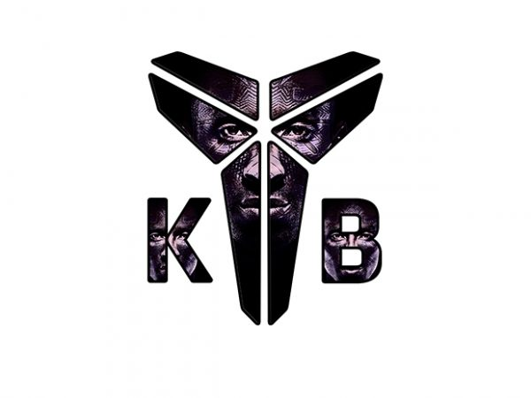

Kobe Bryant
A look at the legendary career of Kobe Bryant.
A look at how Kobe Bryant went from being a decorated high school star to an NBA icon.
Here's a timeline of Kobe Bryant, one of the Greatest Basketball Player to ever live...
- 1996 Drafted and Traded
- 1997 Slam Dunk Contest Champion
- 1999-2002 Phil Jackson arrives and the three-peat
- 2004 Fallout with Shaq
- 2005 Phil Jackson Returns
- 2005 Phil Jackson Returns
- 2006 Career-high 81 points
- 2008 Olympian
- 2008-2010 Return to championship form
- 2012 Final Olympic medal
- 2016 Dear Basketball/Retirement
- 2018 Oscar
“Everything negative - pressure, challenges - is all an opportunity
for me to rise. I don't want to be the next Michael Jordan, I only
want to be Kobe Bryant. These young guys are playing checkers. I'm
out there playing chess. ”
-Kobe Bryant